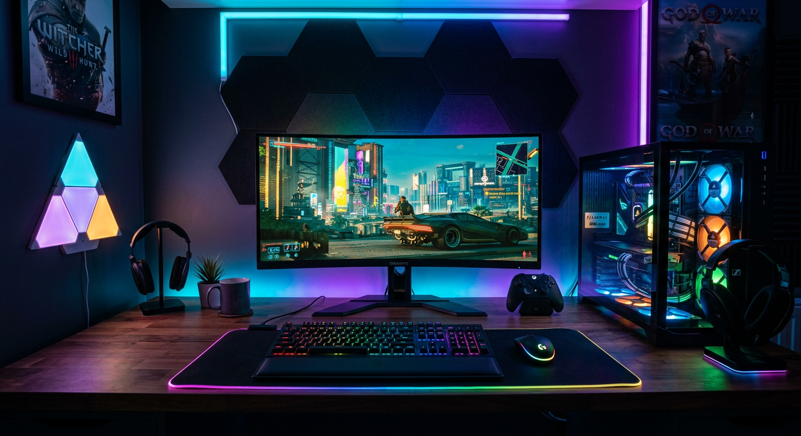
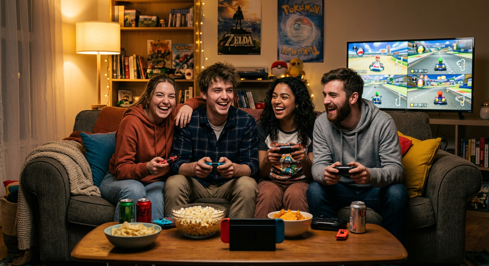
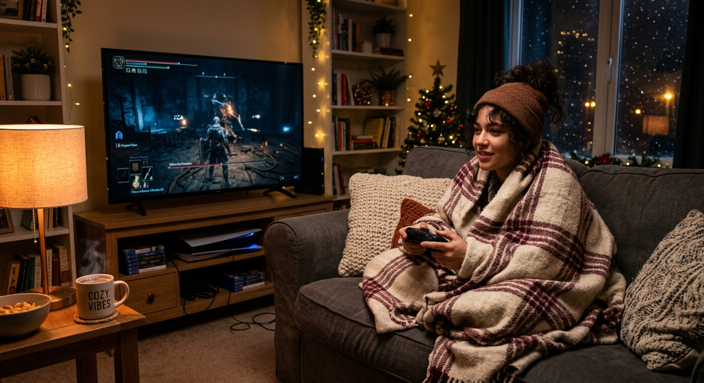
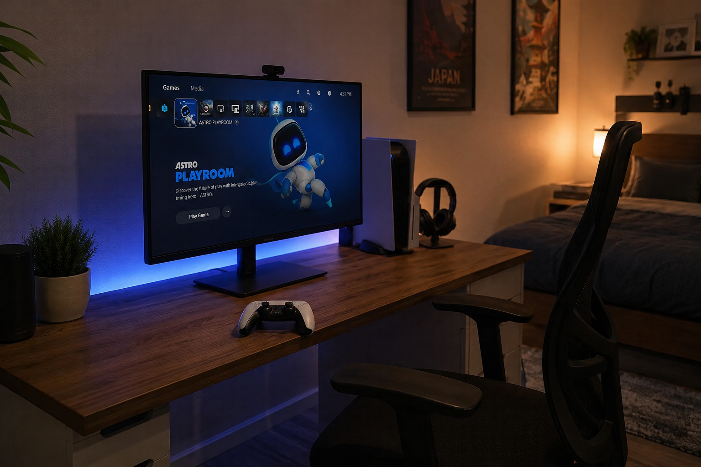
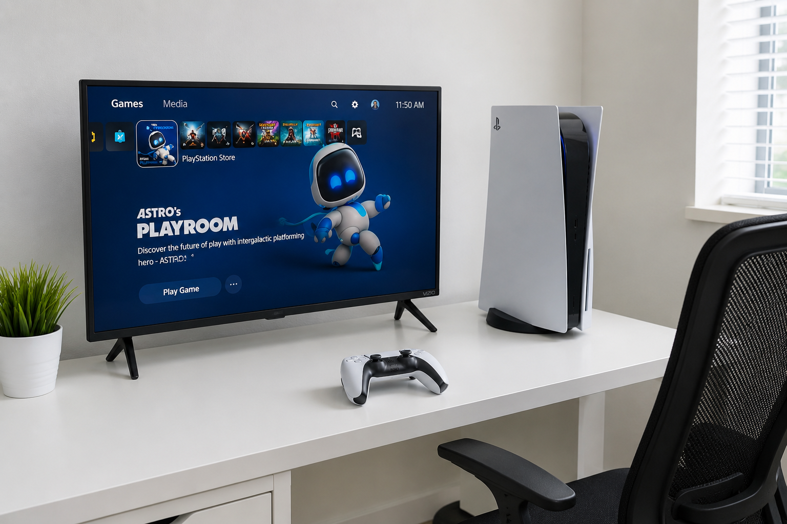
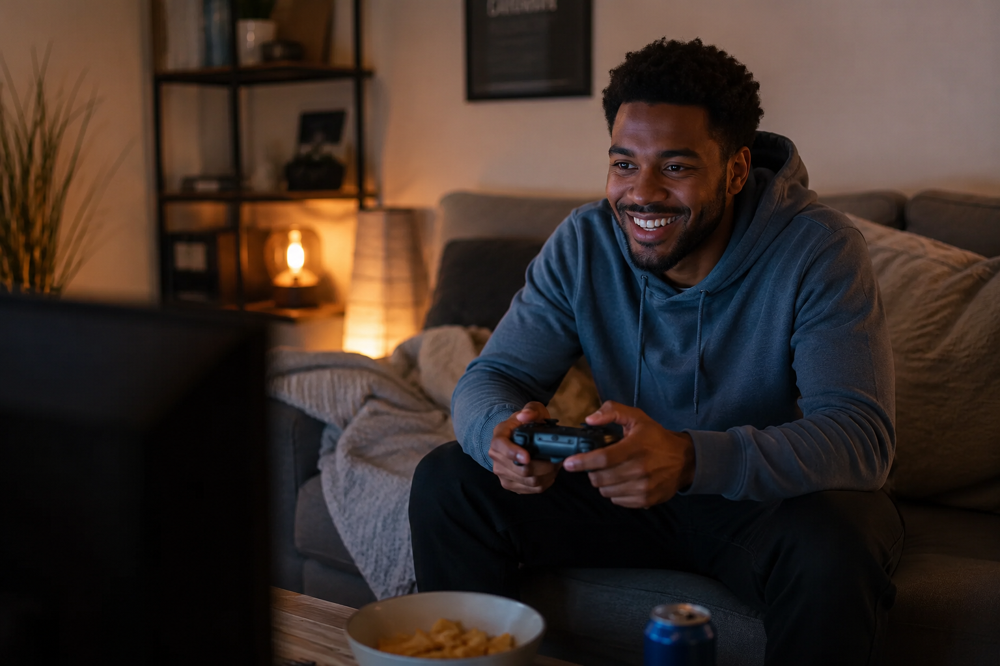

Home
Video gaming is one of my favorite hobbies. It involves playing interactive games on a computer, console, or phone. Games can be anything from solving puzzles to exploring huge open worlds to competing against other players online.
There are so many different types of games out there — something for everyone. I personally love RPGs and story-driven games where you get to make choices and explore.

AI prompt used: "Gaming desk setup with a monitor keyboard and controller, RGB lighting, dark room, photorealistic"
Single-Player Games
Games you play alone, usually with a big story to follow. Great for relaxing and getting lost in another world.
Multiplayer Games
Games where you play with or against other people online. Really fun with friends.
Indie Games
Smaller games made by independent developers. Some of my favorites have been indie games — they get really creative.
About Me
A lot of people think gaming is just for kids or teenage boys, but that is not true at all. People of all ages and backgrounds play video games. The average gamer in the US is actually in their 30s, and almost half of all gamers are women.
I have been gaming for as long as I can remember. It started with simple games and grew into a real passion over the years.

AI prompt used: "Group of diverse friends laughing and playing video games together on a couch, cozy living room, photorealistic"
| Category | My Answer |
|---|---|
| Favorite Genre | FPS / Action-Adventure |
| Favorite Platform | PC and Console |
| All-Time Favorite Game | Spiderman PS4 |
| How Long I've Played | Most of my life |
Casual Players
Play here and there when they have free time. Usually stick to simpler or mobile games.
Dedicated Gamers
Really into games and follow new releases. Have a favorite genre or two and play regularly.
Competitive Players
Play seriously in ranked modes or tournaments. Some even go pro and compete for prizes.
My Gaming Schedule
Gaming fits into pretty much any schedule because you can play for 20 minutes or 5 hours depending on what you feel like. There is no real season for it — you can game any time of year.
That said, there are definitely better times to game than others, and the gaming calendar does have some patterns worth knowing about.

AI prompt used: "Person wrapped in a blanket playing video games on a couch on a cozy winter evening, warm lighting, photorealistic"
Friday Nights
No school or work the next morning, so it is easy to stay up late and have a longer session.
Weekends
Best time for big gaming days. You can really get into a game without watching the clock.
After Class
Even 30 to 45 minutes after a long day is a great way to decompress before studying again.
Game Release Seasons
- Spring: Indie games and smaller releases. Usually some good sales on older titles too.
- Summer: Big game announcements and demo events like Summer Game Fest. Steam Summer Sale happens here.
- Fall: The biggest season — most major releases drop between September and November.
- Winter: Holiday sales and a good time to catch up on your backlog.
My Favorite Places to Play
You can game just about anywhere these days — at home, at a friend's place, or even on your phone while waiting somewhere. But some spots are definitely better than others.

AI prompt used: "Cozy home gaming desk setup with monitor and controller, RGB lighting, dark room, photorealistic"
At Home
The most comfortable option. You have your own setup, your own snacks, and no one rushing you.
A Friend's Place
Co-op and local multiplayer games are way more fun when you are actually in the same room.
Esports Venues
Charlotte has esports facilities you can visit. Watching or joining a live tournament is a totally different experience.
| Place | Best For |
|---|---|
| UNCC Esports Arena | Students and competitive gaming |
| Local game stores | Community events and trading games |
| Home or dorm room | Everyday gaming and long sessions |
How to Play
Getting into gaming is easier now than it has ever been. You do not need a lot of money to start, and there are tons of free games available. Here is a simple way to get started.

AI prompt used: "Simple beginner gaming setup with a console and controller on a clean white desk, bright lighting, photorealistic"
- Pick a platform. PC gives you the most options and sales. Consoles like PlayStation, Xbox, or Switch are easier to set up. Mobile is free and always with you.
- Start with free games. Fortnite, Minecraft (demo), and many others are free. Try a few to see what you enjoy.
- Find a genre you like. RPG, shooter, puzzle, platformer — there is a lot to choose from. Watch some YouTube gameplay videos before buying anything.
- Join a community. Subreddits, Discord servers, and YouTube channels exist for almost every game. People are usually happy to help beginners.
Budget Option
Mobile or a basic PC with free-to-play games. You can have a great time spending nothing at all.
Mid Range
A used console plus a few games is a solid setup for under $200. Great starting point.
Full Setup
A gaming PC or current-gen console with good peripherals. This is the dream setup most people work toward over time.
What platform are you interested in?
Why I Love Gaming
Gaming is not just something I do when I am bored. It is genuinely something I enjoy and look forward to. There are a lot of real reasons why gaming has been such a big part of my life.
It helps me relax after long days of class and work. When everything feels overwhelming, sitting down with a good game for an hour resets my brain in a way that nothing else really does.

AI prompt used: "Person smiling and relaxing while playing a video game, cozy room, warm lighting, photorealistic"
It Reduces Stress
Having something fun to focus on that is completely separate from real-world problems is genuinely helpful for mental health.
It Builds Skills
Problem solving, pattern recognition, quick thinking — gaming actually sharpens a lot of skills that carry over into everyday life and even coding.
It Connects People
Some of my best friendships have been built or strengthened through gaming together, even across long distances.
Honestly, some of the best storytelling I have ever experienced has been in video games. Games like Zelda, The Last of Us, and Stardew Valley have genuinely moved me in ways movies and books sometimes do not. That is why gaming is my hobby.
AI Prompts
All images on this site were generated using an AI image tool. The prompts used for each image are listed below and also appear beneath each image throughout the site.
AI prompt used: "Gaming desk setup with a monitor keyboard and controller, RGB lighting, dark room, photorealistic"
AI prompt used: "Group of diverse friends laughing and playing video games together on a couch, cozy living room, photorealistic"
AI prompt used: "Person wrapped in a blanket playing video games on a couch on a cozy winter evening, warm lighting, photorealistic"
AI prompt used: "Cozy home gaming desk setup with monitor and controller, RGB lighting, dark room, photorealistic"
AI prompt used: "Simple beginner gaming setup with a console and controller on a clean white desk, bright lighting, photorealistic"
AI prompt used: "Person smiling and relaxing while playing a video game, cozy room, warm lighting, photorealistic"
No AI was used for the HTML, CSS, or written text on this page.